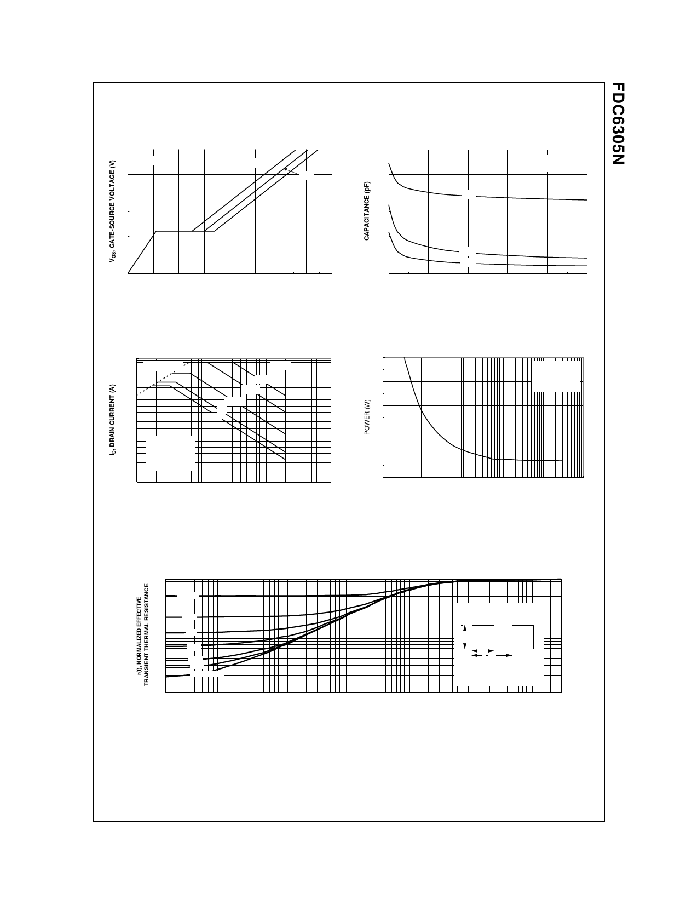

Typical Characteristics (continued)
5
ID = 2.7A
4
3
VDS = 5V
10V
15V
2
1
0
0
0.5
1
1.5
2
2.5
3
3.5
4
Qg, GATE CHARGE (nC)
Figure 7. Gate-Charge Characteristics.
10
RDS(ON) LIMIT
1
100µs
1ms
10ms
100ms
1s
DC
0.1
VGS = 4.5V
SINGLE PULSE
RθJA = 180oC/W
TA = 25oC
0.01
0.1
1
10
100
VDS, DRAIN-SOURCE VOLTAGE (V)
Figure 9. Maximum Safe Operating Area.
500
f = 1MHz
VGS = 0 V
400
CISS
300
200
100
0
0
COSS
CRSS
4
8
12
16
20
VDS, DRAIN TO SOURCE VOLTAGE (V)
Figure 8. Capacitance Characteristics.
5
SINGLE PULSE
RθJA = 180oC/W
4
TA = 25oC
3
2
1
0
0.01
0.1
1
10
100
SINGLE PULSE TIME (SEC)
1000
Figure 10. Single Pulse Maximum
Power Dissipation.
1
0.5
D = 0.5
0.2
0.1
0.05
0.02
0.2
0.1
0.05
0.02
0.01
Single Pulse
0.01
0.0001
0.001
0.01
0.1
1
t1, TIME (sec)
RθJA (t) = r(t) * R θJA
RθJA = 180°C/W
P(pk)
t1
t2
TJ - TA = P * R θJA (t)
Duty Cycle, D = t 1/ t 2
10
100
300
Figure 11. Transient Thermal Response Curve.
Thermal characterization performed using the conditions described in Note 1c.
Transient themal response will change depending on the circuit board design.
FDC6305N, Rev. C